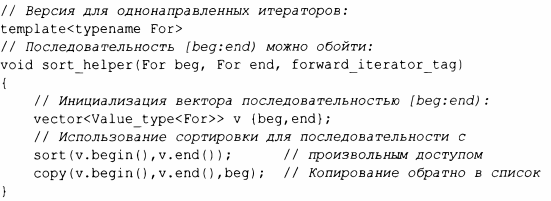
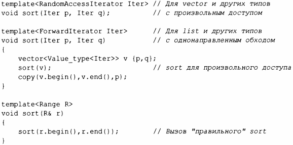

⇐13.9 Функции типов 13.9.2 Предикаты типов⇒
Алгоритм стандартной библиотеки sort () использует пару итераторов, которые должны определять последовательность (глава 12, "Алгоритмы"). Кроме того, эти итераторы должны обеспечивать произвольный доступ к элементам этой последовательности, т.е. они должны быть итераторами с произвольным доступом. Некоторые контейнеры, такие как forward_list, не предлагают такой возможности. В частности, forward_list является односвязным списком, поэтому индексация его элементов дорогостоящая, а разумного способа вернуться к предыдущему элементу не существует. Однако, как и большинство контейнеров, fоrward_1ist предлагает однонаправленные итераторы, которые можно использовать для обхода последовательности с помощью алгоритмов и циклов for (§6.2).
Стандартная библиотека предоставляет механизм iterator_traits, который позволяет проверять, какой тип итератора предоставляется. С учетом этой возможности можно улучшить sort () для диапазона из §12.8 так, чтобы он принимал либо vector, либо forward_list. Например:
Методы, необходимые для выполнения этой работы, полезны в общем случае.
Сначала я пишу две вспомогательные функции, которые принимают дополнительный аргумент, указывающий, будет ли функция использоваться для итераторов с произвольным доступом или для однонаправленных итераторов. Версия с аргументами произвольного доступа тривиальна:
Версия для однонаправленных итераторов копирует список в vector, сортирует и копирует обратно:
Value_type<For> - это тип элементов For, называемый типом значения. Каждый итератор стандартной библиотеки имеет член value_type. Я получаю запись Value_type<For>, определяя псевдоним типа (§6.4.2):
Таким образом, для vector<X> запись Value type<X> представляет собой Х.
Настоящая "магия типов" состоит в выборе вспомогательной функции:
Здесь я использую две функции типа: I tera tor type<C> возвращает тип итератора С (т.е. С::iterator), а затем Iterator_саtegory<Iter>{} создает значение "дескриптора", указывающее разновидность предоставленного итератора:
Теперь можно выбирать между двумя алгоритмами сортировки во время компиляции. Этот метод, называемый диспетчеризацией дескрипторов, является одним из нескольких методов, используемых в стандартной библиотеке и других местах для повышения гибкости и производительности.
Мы могли бы определить Iterator_type следующим образом:
Однако, чтобы распространить эту идею на типы без типов-членов, такие как указатели, поддержка диспетчеризации дескрипторов в стандартной библиотеке представлена в виде шаблона класса iterator_traits из заголовочного файла <iterator>. Специализация для указателей выглядит следующим образом:
Теперь можно написать:
Теперь int * может использоваться в качестве итератора с произвольным доступом, несмотря на отсутствие типа-члена; Iterator_category<int*> представляет собой random_access_ iterator_tag.
Многие свойства и методы, основанные на свойствах, станут ненужными при появлении концептов (§7.2). Рассмотрим версию примера sort () с концептами:
Прогресс налицо.